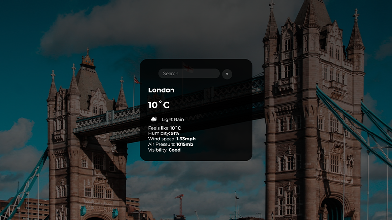
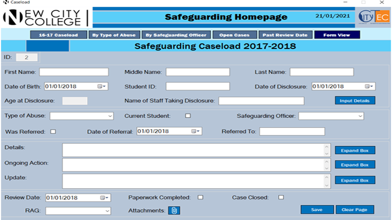

I’m a second-year student at Goldsmiths University of London pursuing a degree in Computer Science. I enjoy creating websites and applications, and aspire towards a career in software engineering. My goal is to build products that provides technology solutions and optimised experiences.
Here are a few projects I’ve worked on:
My Projects

Agile Saver
Developed a personal budgeting android application alongside a group of 6 other programmers, as a second-year group project.
The app helps users keep track of their expenses, learns their spending patterns using machine learning, and recommends
deviations to help them save money for the long term, as well as have some form of disposable income towards the end of the month.
To-Do List
Developed a To-Do List application using Java, specifically the java swing library, to allow users to keep track of their tasks
or upcoming deadlines. The app is connected to a backend SQLite database, allowing the user to persistently view their To-Do tasks,
as well as perform CRUD operations.
Calorie Buddy
Developed a digital calorie counter web application using the M.E.N stack, to help users manage their diet.
Essentially the food data is retrieved from a backend database, allowing users to perform CRUD operations, calculate and display
their total macros of selected food items.

Live Weather
Developed a weather app using HTML CSS, JavaScript, and the OpenWeatherMap API. The purpose of the app is to display weather
forecast information of different cities in real time using a search form. The API data is retrieved in the form of JSON,
and then destructured using an array of objects.
Draw.Gold
Developed a drawing application that lets users create artistic drawings on the canvas using various tools e.g. the shape tool,
pen tool, brush tool, free hand shape tool, paint bucket tool, spirograph tool, and even uploading images onto the canvas to edit.

Student Traveller
Developed a responsive website called Student Traveller, a blog which provides students with an insight to travel destinations in Asia and Europe.
The website was developed using HTML, CSS, JavaScript and BootStrap.

Platform Game
Developed a 2D platform game using P5.js. The game requires the player to reach the end of the platform without falling down the tunnel or getting eaten by the enemies.
The player has only three lives. If they use up all three lives, the game will be over.
Sultan Turkish Cuisine
Developed an ordering till system for waiters. The purpose of the till system is to allow waiters to efficiently take customer orders, and easily calculate the
total bill with a button click. The till system also uses a login system, allowing waiters to process orders under their name.

Safeguarding Database
Developed a database application using VB and SQL, which stores data of any internal/external incidents college students may have faced.
The application was developed for the Safeguarding Department of New City College, to improve the efficiency of how they store their data.
Scary Maze Game
Developed a scary maze game using VB. The game consists of three levels, where the player has to reach the end of the maze without hitting any walls.
This has to be done within 60 seconds. Once the player has successfully reached the end of the maze at the final level, it will trigger the jumpscare!